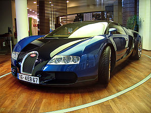
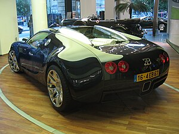

The Bugatti Veyron EB 16.4 is a mid-engine sports car, designed and developed in Germany by the Volkswagen Group and Bugatti and manufactured in Molsheim, France, by French automobile manufacturer Bugatti. It was named after the racing driver Pierre Veyron.
The original version has a top speed of 407 km/h (253 mph).[5][6] It was named the 2000s Car of the Decade by the BBC television programme Top Gear. The standard Veyron also won Top Gear's Best Car Driven All Year award in 2005.
In May 1998, Volkswagen AG acquired the rights to use the Bugatti logo and the trade name Bugatti Automobiles S.A.S. To succeed the EB 110 model produced under the previous ownership, the automaker quickly released a series of concept cars whose technological advancements would culminate in the form of the Veyron 16.4.
Between October 1998 and September 1999, Bugatti introduced a series of Giugiaro-designed concept vehicles, each with permanent four-wheel drive and powered by the Volkswagen-designed W18 engine. The first car, the EB 118, was a 2-door luxury coupé presented at the 1998 Paris Motor Show. The next car, the EB 218, was a 4-door saloon presented at the 1999 Geneva Motor Show. The third and final car, the 18/3 Chiron, was a mid-engine sports car presented at the 1999 International Motor Show in Frankfurt.[13]
